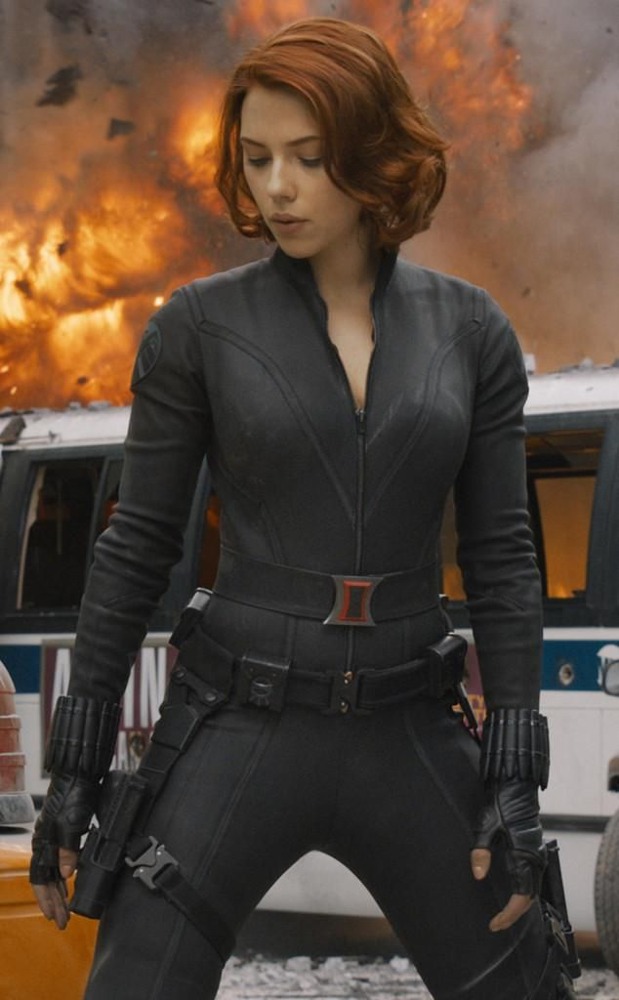
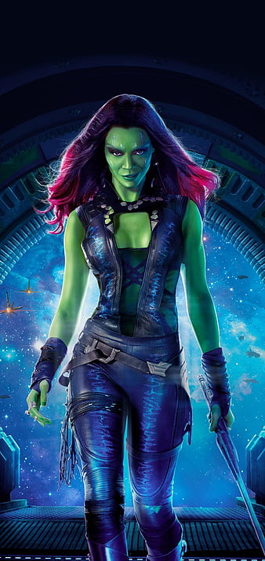
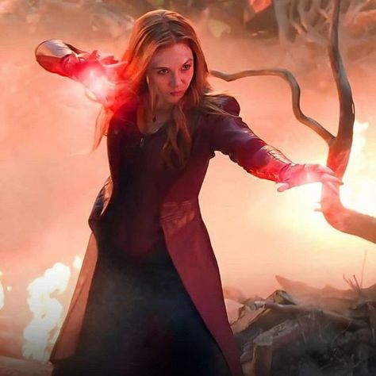
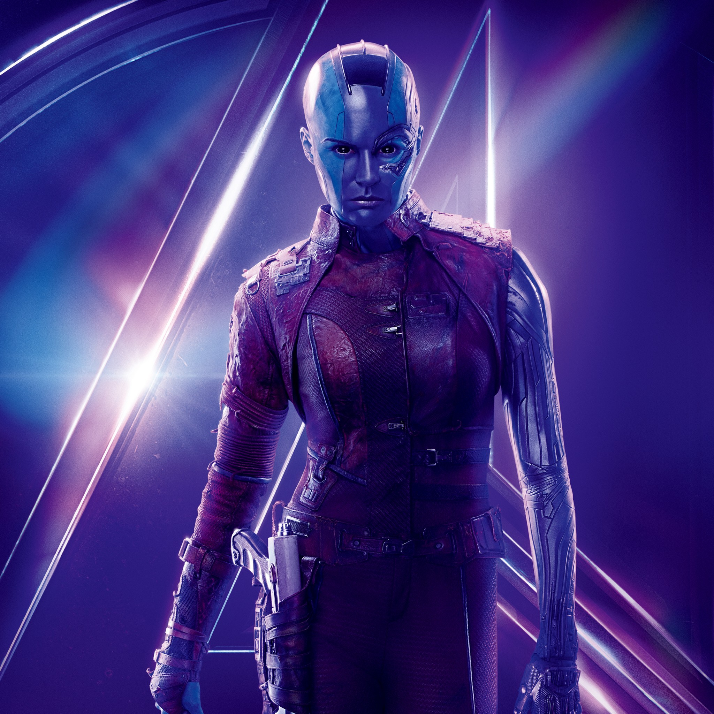

- VIUDA NEGRA
- La Viuda Negra, cuyo nombre real es Natasha Romanoff, es un icónico personaje de Marvel Comics y del Universo Cinematográfico de Marvel.
Es conocida por ser una habilidosa espía y luchadora. Natasha Romanoff, una ex-agente de la KGB, se convirtió en una agente de S.H.I.E.L.D. y una Vengadora,
donde utilizó su destreza en artes marciales, su inteligencia y su capacidad para infiltrarse en situaciones peligrosas.
Su traje negro y rojo es su distintiva vestimenta de combate. La Viuda Negra es apreciada por su astucia y sus habilidades tácticas, además de su misterioso pasado.
Scarlett Johansson interpretó el papel de la Viuda Negra en varias películas del MCU, contribuyendo a su popularidad en el cine y la cultura pop.
Posee una amplia gama de habilidades sobrehumanas, incluyendo fuerza, velocidad, resistencia y la capacidad de volar.
Carol Danvers comenzó su carrera como una piloto de la Fuerza Aérea de los Estados Unidos antes de adquirir sus poderes en un accidente relacionado con tecnología alienígena.
Su traje característico es de color azul y rojo, con un símbolo estilizado de estrella en su pecho. La Capitana Marvel es una líder valiente y una defensora de la justicia en el Universo Marvel.

Es conocida por ser la última superviviente de su especie, los Zen Whoberi, después de que su familia fuera asesinada por el villano Thanos, quien la adoptó y la entrenó como asesina.
Gamora posee habilidades excepcionales en combate, es experta en el uso de armas, y tiene una fuerte ética y sentido de justicia a pesar de su oscuro pasado.
Su apariencia física se caracteriza por su piel verde y su traje negro y rojo. Gamora ha desempeñado un papel importante en las historias cósmicas de Marvel y es un miembro vital de los Guardianes de la Galaxia,
donde lucha por proteger el universo contra amenazas cósmicas.

Posee habilidades mágicas y telepáticas, lo que le permite manipular la realidad y lanzar hechizos poderosos. Wanda es conocida por su trágico pasado,
que incluye la pérdida de su hermano gemelo, Pietro (Quicksilver), y su conexión con los mutantes y los Vengadores en el Universo Marvel.
Su traje a menudo presenta un diseño rojo y negro. La Bruja Escarlata ha sido un miembro destacado de los Vengadores y ha luchado en defensa del mundo contra amenazas cósmicas y supervillanos.

Es conocida por su apariencia cibernética y su relación con el villano Thanos, quien la adoptó y sometió a mejoras tecnológicas que la convirtieron en una formidable guerrera.
Nebula posee fuerza sobrehumana, durabilidad y habilidades en combate avanzadas. Su aspecto se caracteriza por su piel azul y piezas cibernéticas en su cuerpo.
A lo largo de su historia, Nebula ha tenido una relación complicada con Gamora y se ha unido a los Guardianes de la Galaxia en su lucha contra las amenazas cósmicas.